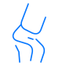

OUR SERVICES
Care for every
part of life.
Specialist care and diagnostic technology, brought together with our mission to make healthcare affordable.
Explore services
CARE AT S.R.P.
Find the right service.
Browse our six departments and diagnostic services, or ask about visiting neurosurgery.
Care & specialties
Explore our six specialist departments.
- General Surgery
- Obstetrics and Gynaecology
- Anesthesiology

Orthopedics- Paediatrics
- Urology
Diagnostic services
Imaging and testing to support your next step in care.
Hospital services
[PARAGRAPH TEXT]
Laboratory services
[PARAGRAPH TEXT]
Infertility services
[PARAGRAPH TEXT]
Andrology services
[PARAGRAPH TEXT]
No services match that search. Try another term.
DIAGNOSTIC SERVICES
Clear answers.
Connected care.
Our diagnostic services support assessment and care planning. Ask our team about appointments and any preparation needed for your test.
- 2D EchoUltrasound imaging to assess the heart.
- CT-ScanCross-sectional imaging to support diagnosis and care planning.
- ECGA recording of the heart’s electrical activity.
- Tread Mill TestA monitored exercise test to assess how the heart responds to activity.
- USG (Trans abdominal and Trans-Vaginal with 3D/4D)Trans-abdominal and trans-vaginal ultrasound, including 3D/4D imaging.
- X-RayDiagnostic X-ray imaging to help guide your care.
VISITING SPECIALIST SERVICE
Neurosurgery
Available on a weekly/monthly basis. Please contact the hospital to confirm the next clinic date.
HERE FOR YOUR VISIT
Support for the practical details, too.
Find the information that helps make your next step easier.
GET IN TOUCH
Let’s find your next step.
Tell us what you need, and we’ll help you find the right service and a time that works for you.
Request an appointment